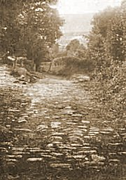

Sacred Texts Legends & Sagas England
|  |
Early British Trackways, Moats, Mounds, Camps and Sitesby Alfred Watkins[1922] |
This was the first book about ley lines. Ley lines are alignments on the landscape of natural and artificial features, some of which follow perfectly straight tracks for miles. First discovered in Britain by the author of this book, Alfred Watkins, a photographer and inventor, ley lines were pursued eagerly by organized clubs in the period between the world wars. Interest in leys died out after the 1930s, but was revived in the 1960s, after the publication of a popular book on the subject, The View Over Atlantis, by John Michell. Latter-day ley-hunters took the concept much further than Watkins and the earlier enthusiasts. Dowsing, flying saucer paths, crop circles, biodynamic farming, and feng shui have all been associated with ley lines. Collections of ley lines have been said to conceal hidden messages, reveal the location of esoteric items, or contain star maps. The existence of ley lines is now one of the accepted tenets of New Age belief. This topic is collectively called 'Earth Mysteries'. However, they aren't just limited to this planet: leys have even supposedly been charted in the Cydonia region of Mars in the vicinity of the 'Face of Mars'.
Watkins never attributed any supernatural significance to leys; he believed that they were simply pathways that had been used for trade or ceremonial purposes, very ancient in origin, possibly dating back to the Neolithic, certainly pre-Roman. His obsession with leys was a natural outgrowth of his interest in landscape photography and love of the British countryside. He was an intensely rational person with an active intellect, and I think he would be a bit disappointed with some of the fringe aspects of ley lines today.
Originally just the existence of ley lines was considered speculative by academic archeologists and topographers. Since Watkins, there have been similar alignments discovered in far-flung locations, including the Atacama desert of Chile, the Southwestern United States, and other places; all of these can be directly traced to human activity, and associated with ceremonial and astronomical activities. So this probably makes the concept of similar alignments by Neolithic Britons more acceptable to traditional academics, once all the mystical connotations are subtracted.
Watkins wrote several other books on this topic, including The Old Straight Track [1925], and The Ley Hunter's Manual [1927]. These books go into much greater detail but essentially cover the same set of points in this, his first book on leys. All of Watkins' books are long out of print, although used copies can usually be obtained easily (if not cheaply).
--John Bruno Hare, June 17th, 2004.
Title Page
Table of Contents
Table of Illustrations
Foreword to the Average Reader
Introduction
Introduction
Proof
The Ley
Antiquity of the Ley
Individuality of a Ley
Mounds
Earth Cuttings
Water Sighting Points
Mark Stones
Sighting Stones
Trees
Camps
Churches
Castles
Traders' Roads
Hereford Trackways
Traditional Wells
Previous Data
Roman Roads
Place Names
Discovery By Place Name
The Ley-Men
Hints to Ley Hunters
A Few Leys
Endword
Index
Acknowledgments
Advertisements from original
Maps
![g'.г.Ail maiden ©uмонетი: ℞ubli© ძ'ommAin 🖼 ImageI by 'Art'hur R_AckHÅm' & All inclusive names to my Roots && me, me I.B.M.l. ასლაჼ კლდიაშვილი, А©ЛАჼ ©КЛიДиÅWвიЛи [1922], @novadays ი.ბ. АйбоЛит [Aibolem МЕЛОДИЯR₾ი მო'სი'კვÅჼ]](https://barionleg.github.io/db-sacred-texts.li/neu/ba_geo_f.png) |